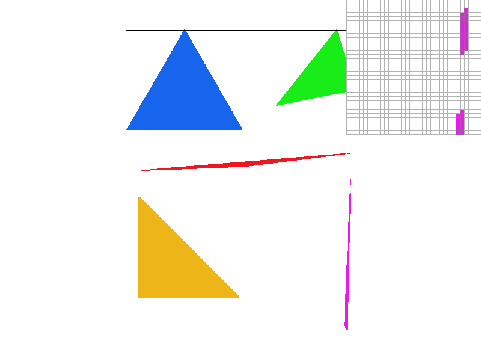
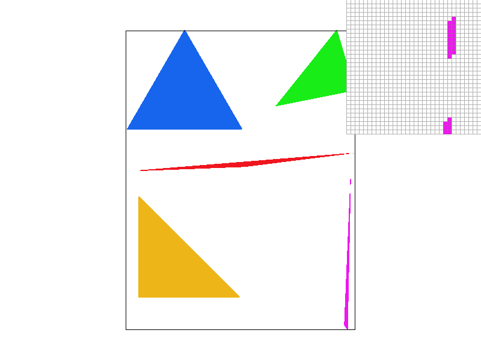
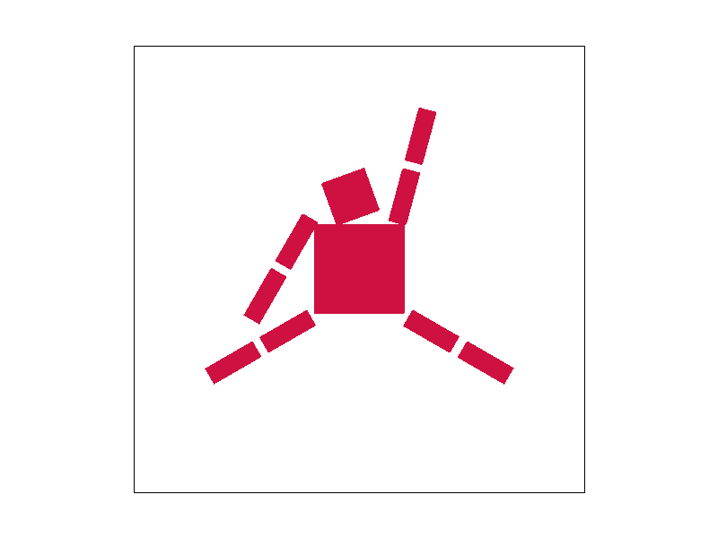
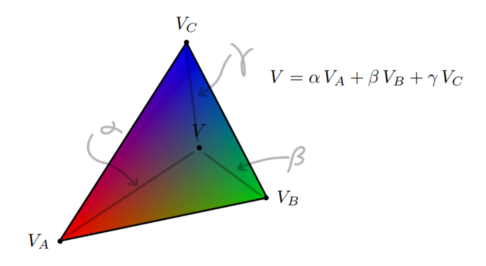
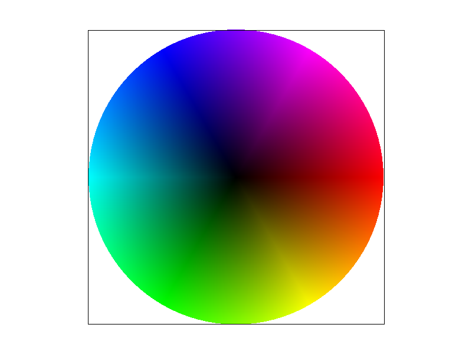
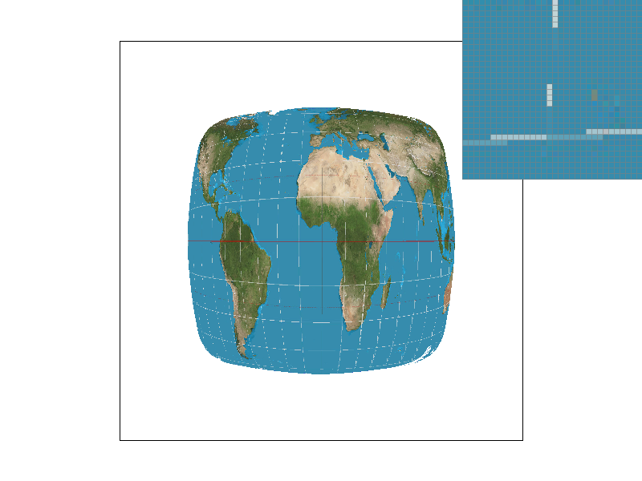
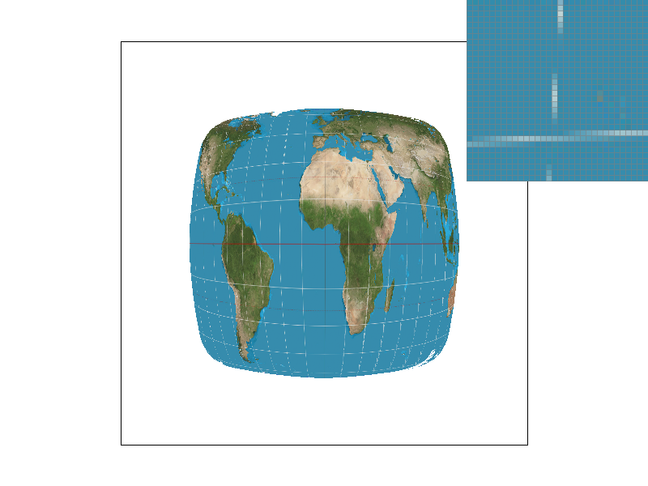
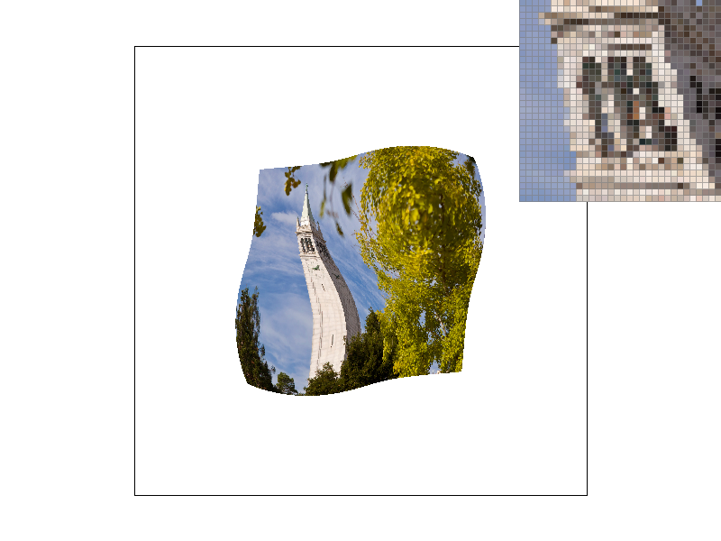
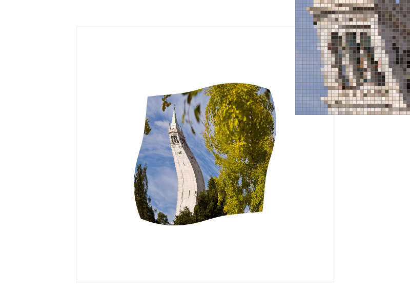
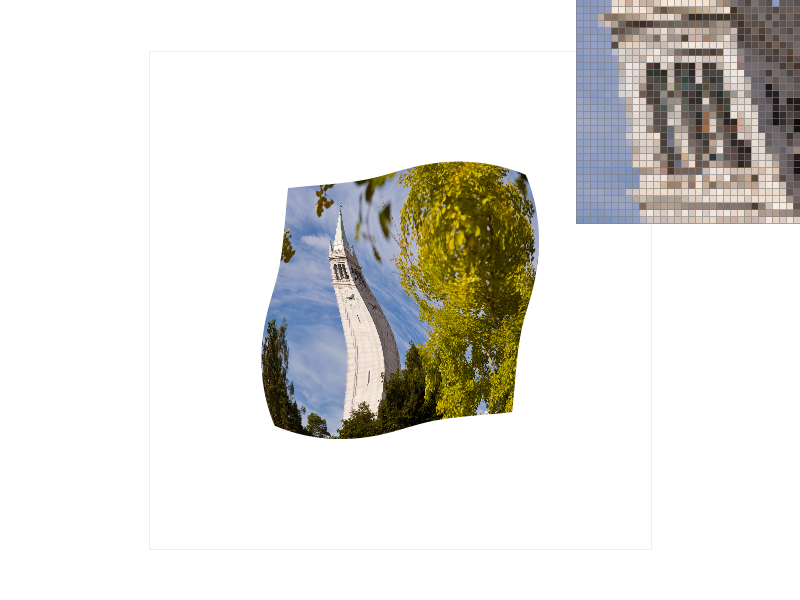

In this assignment, I applied various sampling techniques to display images. I learned how useful barycentric coordinates are, as well as how to use them to interpolate across various colors and textures. From there I implemented matrix transformations that are very helpful in the world of graphics. I also applied many antialiasing techniques that we discussed in class, and I found it very interesting that each technique has its own strengths and weaknesses. There isn’t really a one-size-fits-all solution for making things appealing to the human eye.
Task 1: Drawing Single-Color Triangles
Rasterizing a triangle is, at its simplest, seeing which sample points lie inside of your triangle and then filling them. To do this, you would need to first
define your triangle with the coordinates of its 3 points and make sure they all have the same orientation, clockwise for us. Then, you want to find the lines that are created between each of
the triangle's points, which of course, the triangle's edges/vectors (e0, e1, and e2) lie on. Theoretically, depending on where a given sample point
lies with respect to the triangle's 3 edges, you can determine whether or not said sample point lies within the triangle. For some
visualization, say you calculated these vectors in counter-clockwise order around your triangle. If you shifted the entire "canvas"
to make e0 lie on the x-axis of a graph (with positive x pointing in same direction as e0), you'd see that a point placed in the triangle would
have a positive y coordinate. In fact, if you did
the same for e1 and e2, you would alse see that the point has a positive y coordinate. So, now we've figured out that if a point is
placed within a triangle, it will be "placed above" an edge given that the edge lies on the x-axis of a coordinate graph. This is called the
Three Line Test. When putting it into practice, we can use an equation that results in a value that is positive, negative, or equal to zero
based on a sample point's relative position with a triangle's edge. If we set up the calculations so that positive means that a point is in our
desired area, then we can run the calculation 3 times on a said point with our 3 different edges. If the point returns a positive value for all
edges, then the point is in our triangle, so we can rasterize it. To rasterize the entire triangle's area, make sure to check every point in the
triangle's bounding box, which is the smallest rectangle in-which the entire triangle's area fits into. Also, if you want to, you can decide whether or not
to rasterize points that return a value that's equal to zero when plugged in, but I did for the assignment.
For the nitty gritty of my triangle rasterization function implementation, I wanted to first define the area in which we were working with. This meant
to first define the bounding box of the triangle by using finding the triangle's maximum and minimum x and y coordinates. After having these, I created
2 for loops, 1 nested inside the other, that swept through each sample in the bounding box by starting at the first y coordinate in the bounding box and then
checking every x coordinate with said y coordinate in the bounding box. This means that it is no worse than any other algorithm that
check each sample within the bounding box of the triangle, as it does the same thing.

Here is a close-up of the corner of the pink triangle that appears to not be continuous, which I found interesting.
Task 2: Antialiasing by Supersampling
To implement supersampling, I used 2 loops that iterate through the discrete integer values of coordinates in the bounding box. However,
with every integer coordinate, I implemented 2 loops to sample sqrt(sample_rate) * sqrt(sample_rate) times per coordinate. This worked by
sampling every point in a sqrt(sample_rate) * sqrt(sample_rate) grid within each integer coordinate with the use of “helper” coordinates i
and j where x < i < x + 1, y < j < y + 1. Now instead of directly drawing to the framebuffer like in Task 1, if the supersampled
point was in the triangle, then its corresponding spot in the sample_buffer array was updated to be the desired color. This is only possible
by resizing the sample_buffer to scale with the sample_rate, and you can do this by simply multiplying the original sample_buffer's dimensions
by the sample_rate. This way, each pixel would now correspond to sample_rate number of samples. To finally resolve_to_framebuffer, I made sure
that for every discrete coordinate in the bounding box, the corresponding sample_rate number of color values were averaged and assigned to the
desired pixel. Overall, implementing supersampling was really useful as it made all of the geometry look “smoother” to the eyes by eliminating
a lot of the discrete edges between a collection of colors. As for changes in the rasterization pipeline, supersampling adds a step by “drawing”
all of the triangles into the sample_buffer before resolving to the frame buffer, unlike in Task 1 where it is directly drawn onto the framebuffer.
This is essential, as for supersampling to work, the values of the supersampled points need to be averaged before officially being drawn onto the
framebuffer. The slanted edges of a triangle, with respect to a standard x-y coordinate graph, don't sit cleanly on the graph's discrete coordinates,
which can make some pixels stray in weird directions. So by having supersampling take the average of how much of a color should appear in a pixel,
areas where the triangle is barely touching won't be unnecessarily colored.
Here we can see that as the sample rate increases, there is a reduction in the jaggedness and separation of the pink triange's corner. This is because as more
samples are taken per pixel, the rasterizer calculates a value of pink that is more accuracte to the proportion of pink triangle present in the area.

Supersample Rate 1 per pixel.
Supersample Rate 4 per pixel.
Supersample Rate 16 per pixel.
Task 3: Transforms
To implent the desired transforms, I had each function return a transformation matrix that, when applied, would transform the current
shape by the desired parameters.
Here is my attempt at shaping my_robot into the shape of Nike's "Jumpman" logo, which takes after former professional basketball
player Michael Jordan. Here, my_robot is also colored with the same red associated with the Chicago Bulls, Jordan's former team.

Recreation of the "Jumpman" logo.
Task 4: Barycentric coordinates
I like to think of barycentric coordinates as “proportional coordinates” in the sense that they define a point relative to a set of other points.
For example, let's look at a triangle that varies in color as you go from corner to corner. One corner will have the purest red value, one will have
the purest blue value, and the final one will have the purest green value. As you go from vertex to vertex, you can see that the colors start mixing as the
triangle's color transitions to the next vertex's value. So in order to find the mixed color of an arbitrary point inside the triangle, you have to see how
close it is to each of the red, green, and blue vertices. These “values of closeness,” or weights, are called the barycentric coordinates. Once you have an
arbitrary point's barycentric coordinates, they can be used to describe your arbitrary point with respect to the predefined vertices.

Say alpha was ½, beta was ¼, and gamma was ¼. Then the color at point V could be found by mixing together a ratio of ½ red color + ¼ green color + ¼ blue color.
Here is the successfully generated color wheel after the implementation of barycentric interpolation.

Color wheel.
Task 5: "Pixel sampling" for texture mapping
Pixel sampling helps us determine what texture we want to apply to a given surface. Since our surface probably won't have
the exact same dimensions as our texture data, we can use barycentric coordinates paired with pixel sampling methods to help
us find the desired texture for our given point. Barycentric coordinates help us find where our sample point lies relative
to the corners of our data, so wherever our sample point lies with respect to the corners of screen space will be where it
lies relative to the corners of texture space. From there, we can use either nearest neighbor or bilinear filtering to determine
our texture values. Say that our sample is mapped into texture space and lies on a texture value that is not a discrete texture
sample location. If we were to use nearest neighbor filtering, then we would just round our mapped value's x and y coordinates
and grab the texture sample at the discrete coordinates in texture space to assign to our sample. However, if we were to use
bilinear filtering, then we would take the 4 discrete texture sample locations surrounding our texture value and use bilinear
interpolation to find our texture value as a result of weighing its nearest discrete texture samples. In my implementation,
I first interpolated horizontally, and then vertically. Essentially getting 2 weighted mixes of where our desired texture
value was horizontally, then took a weighted mix of those vertically to get our final desired texture value.
Here is an example of nearest sampling being clearly defeat by bilinear sampling.

Nearest sampling

Bilinear sampling
You can see that with nearest sampling, you can't even tell that the map's grid marks even cross each other. However,
the grid line's intersections can clearly be seen when using bilinear sampling.
Here we can compare each sample method.
Nearest sampling at 1 sample per pixel.

Bilinear sampling at 1 sample per pixel.

Nearest sampling at 16 samples per pixel.

Bilinear sampling at 16 samples per pixel.
Overall you can see that with bilinear sampling, the visual transition from one object to another is much less
discrete and is much easier for someone to make out. For example, The Campanile's top window just looks like
a smudged black box with nearest neighbor, but you can actually kind of make out the pillars with bilinear s
ampling. Also, as a texture space's dimensions get smaller and smaller, the difference between nearest and
bilinear grows larger and larger. This is because with nearest, your texture value will relatively “snap”
farther, or round farther, to the nearest texture sample coordinate. This makes it so that the texture
value is less indicative of your sample point's actual location in texture space. However, since bilinear
takes a weighted average, it'll still look ok in the sense that the transition in textures isn't as discrete.
Task 6: "Level Sampling" with mipmaps for texture mapping
Sometimes, you can find that a lot of texels end up contributing to a single pixel footprint, which might not be
visually appealing or what you desire. To ensure that something like textures which are applied at varying depths
within a space have correct levels of detail, you can downsample textures before applying them. These downscaled
versions of the original texture image are called a mipmap, and for every mipmap level of an image, the more high
frequencies are filtered out from the original texture image. After having a mipmap, you can use barycentric
coordinates to find the appropriate mipmap level to sample your texels from. As for the specifics regarding
implementation, you want to set up your iterator the same way as in the previous tasks, but here, once we find a
point that is inside our desired triangle, we want to calculate a few different things. First, we want to get the
barycentric coordinates of our sample point along with its barycentric coordinates if we were to add 1 to the x
coordinate, and if we were to add 1 to the y coordinate, giving us 3 sets of barycentric coordinates. Multiplying
these by our triangle's corresponding vertices in texture space gives us the p_uv (the uv coordinates of our sample
in texture space), p_dx_uv (our sample point's uv coordinates if we were to add 1 in the x-axis in pixel space), and
p_dy_uv (our sample point's uv coordinates if we were to add 1 in the y-axis in pixel space) of our sample. Using
these values, we calculate the rate of change in each direction by subtracting p_uv from each derivative and then
scaling them by the dimensions of the texture image. Taking the maximum of norms of these 2 values gives us an L
value, which we take the log base 2 of to get the desired mipmap level we want to sample from. From there, we can
use our sample point's parameters and our mipmap level to sample the correct texel. One thing to note is that when
you are getting your texel, you need to scale your sample's uv coordinates to the dimensions of the mipmap level.
First examining pixel sampling, we can either sample by using nearest neighbor or bilinear interpolation. Using
nearest neighbor will produce an image with very discrete separations between colors and is fast due to the
relative lack of checks required when sampling, but bilinear interpolation can produce an image with smoother
transitions between colors at potentially over 4x the memory cost on top of its added computations. Next, we
have level sampling, where we can use zero, nearest, or bilinear level sampling. Zero is obviously the fastest
and most efficient as only the original texture image needs to be stored and sampled from, whereas when you use
nearest and bilinear, all of the texture image's mipmap levels need to be stored and potentially sampled from.
Bilinear level sampling is also going to be slower than nearest, as 2 texel values are fetched as opposed to 1
in nearest level sampling. Finally, we have the choice of samples per pixel, where the more samples you decide
to have per pixel, the more memory will be used and the slower it will get. I feel that each technique has its
own purpose, and depending on your use case, different ones would yield better results than the others. For
example, if you wanted to map textures onto something with varying depths, level sampling would have the greatest
impact on antialiasing.
Here is a personal image with different sampling combinations.